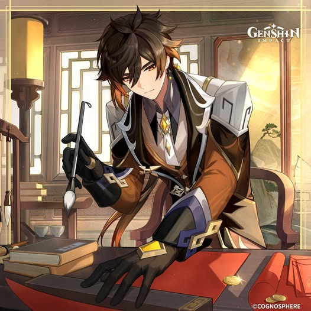
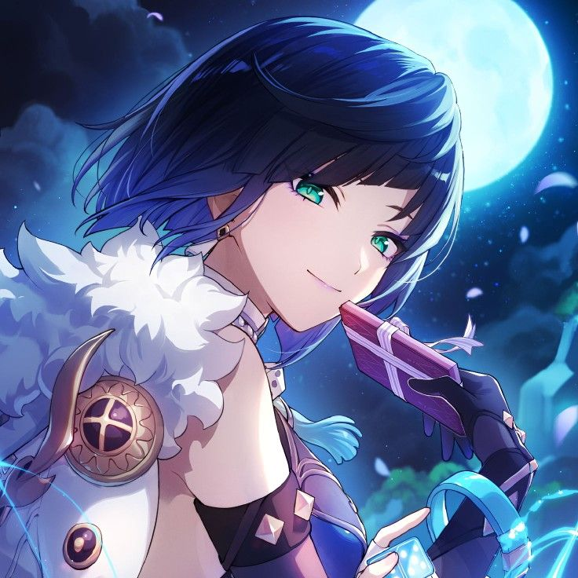

A 77ª Diretora da Funerária Wangsheng. Vou ser a melhor em ajudar você com exorcismos e funerais, sempre te protegendo de qualquer espírito maligno.
Habilidades: Uma incrível cozinheira, ótima exorcista, uma grande artista, psicóloga nas horas vagas, uma excelente usuária de lanças e fluente em 5 línguas diferentes.
Embora não pareça, eu sou uma excelente combatente, e minha função em campo se baseia em atacar os inimigos e causar um estrago que ninguém consegue reparar. Basicamente, minha função é ser fortalecida pelos meus aliados para causar mais dano.
Minha habilidade é a Dança das Borboletas. Ao usá-la, eu fico em um estado em que fico mais veloz, forte e consigo imbuir o elemento Pyro (fogo) nos meus ataques, causando um dano altíssimo em qualquer paspalhão que ousar entrar no meu caminho. Essa habilidade consome parcialmente a minha força vital — o que não é um problema, porque quanto menos vida, mais força eu ganho ao usar essa habilidade.
Meu ataque especial é a Pacificadora de Espíritos. Nela, eu chamo um espírito para atacar os inimigos, limpando todos os seus pecados e erros cometidos em vida com uma bela bufetada na cara. Embora não pareça, essa é a minha habilidade mais forte.
Meus companheiros de combate e suas funções:
Xingqiu: O Xingqiu é um escritor fortíssimo e muito bom, pelo menos eu acho, já que nunca consegui ler um livro dele porque a letra dele é questionável... O Xingqiu, assim como eu, tem a função de causar dano com ataques poderosos, mas o foco dele não é ficar em campo, e sim causar danos parecidos com os meus enquanto aplica bastante o elemento Hydro (água) nos inimigos — o que faz com que meus ataques vaporizem, causando ainda mais dano.

Zhongli: O Zhongli é o consultor da funerária, mas por algum motivo todos falam que ele é quem deveria comandar a funerária, o que eu sinceramente não sei por quê. A função dele é bem simples: fornecer um escudo forte do elemento Geo (terra) para que os ataques dos inimigos não possam me derrubar, já que, pela minha habilidade, eu fico vulnerável a maior parte do tempo. Ele também consegue enfraquecer a resistência dos inimigos, o que aumenta o impacto dos meus ataques.

Yelan: Cheirosa, bonita, forte e incrível, a Dona Yelan nunca deixa a desejar. Ela é uma aventureira muito respeitada e amada, o que é justo — porque eu gosto dela, e se eu gosto dela, todo mundo tem que gostar também. Ela faz uma função parecida com a do Xingqiu, mas com menos aplicações Hydro e mais dano, além de aumentar e fortalecer fortemente os meus ataques. Ela também é uma ótima exploradora, já que sua habilidade faz com que ela fique rigorosamente mais rápida.
Clique no botão acima para receber um conselho espiritual... ou só uma bobagem poética.